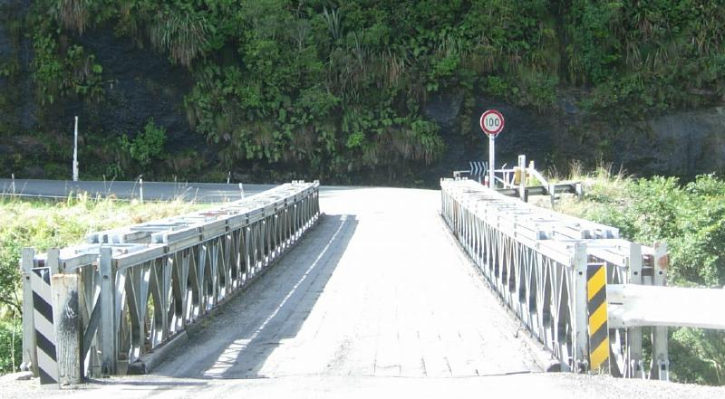
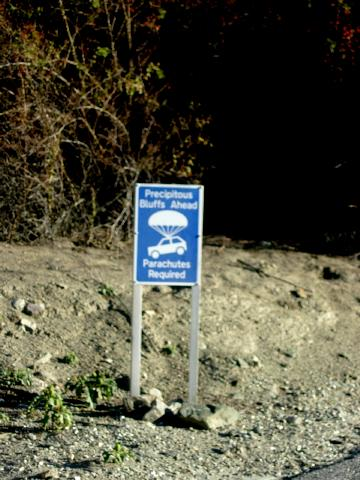

Returned to Christchurch the last day. Nothing new to report, so let's look at:
Why
Do Tourists Die on South Island?
1 - It's all breathtaking; you simply stop breathing.
2 - Insane road signeage. The lane stripes also signal you to pass on blind turns until you're actually into the turn.

3 - No guardrails.
